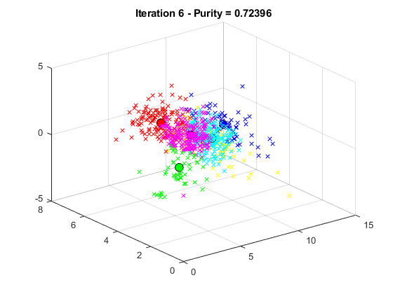

CS 383
Alan Davis Assignment 1 - Part 1
Contents
Clear All
clear, clc, close all
Data
data = xlsread('diabetes.csv');
X = data(:,2:9);
Y = data(:,1);
Random k Value
rng(0);
Run Function
myKMeans(X,6,Y);
Functions
function myKMeans(X,k,Y) % Simply standardizes the data in preparation of performing PCA on the % data. Also, removing the first column which is null. Xm = mean(X); Xs = std(X); X_std = X - repmat(Xm,size(X,1),1); X_std = X ./ repmat(Xs,size(X,1),1); Ym = mean(Y); Ys = std(Y); Y_std = Y - repmat(Ym,size(Y,1),1); Y_std = Y ./ repmat(Ys,size(Y,1),1); X_std(:,1) = []; Y_std(:,1) = []; % For Video finMat = []; % Rows and Cols [rows, cols] = size(X_std); % Colors colors = ['b','r','g','y','c','m','k']; % Dimensionality Reduction & Cluster Formation if size(X_std,2) > 3 coeff = pca(X_std); reduce = coeff(:,1:3); X_std = X_std * reduce; end % Hard Coding that k will only be 1-7 if k > 7 k = 7; end % Means index = randperm(rows,k); %Vector of k random numbers means = []; for i = 1:length(index) %Vectorize starting means means = [means;X_std(index(i),:)]; end % Making Clusters change = 1; iter = 0; % While loop that controls the figure output while change > 2^-23 % Initialize iteration and distance matrix iter = iter + 1; dist = []; % Iterate through to find the new distance calculation for i = 1:k calc = []; for j = 1:rows calc = [calc; norm(means(i,:)-X_std(j,:))]; end dist = [dist calc]; end % Cluster creation C(1:rows,1:3,1:k) = 0; % Iterarte and find points in standardized X to append to C for i = 1:rows [v,index2] = min(dist(i,:)); C(i,:,index2) = X_std(i,:); end % Initialize the cluster purity and purity cpurity = 0; purity = 0; % Iterate k times for every cluster % Copy each cluster into temp for i = 1:k temp = [C(:,:,i) Y]; holder = []; % For loop to remove zero vectors or combine two matrices for j = 1:rows if temp(j,1) == 0 && temp(j,2) == 0 && temp(j,3) == 0 continue else holder = [holder;temp(j,:)]; end end % Count the amount of negative and positive rows one = sum(holder(:,4) == 1); negone = sum(holder(:,4) == -1); % Purity calculations purity = purity + max(one,negone); end % Final Purity for the iteration purity = purity / rows; % Plot Clusters figTitle = ['Iteration ',num2str(iter),' -',' Purity = ',num2str(purity)]; % Allow for all to be on figure 1 by clearing the figure clf % For every Cluster % Assign a color and plot for i = 1:k color = colors(i); scatter3(C(:,1,i),C(:,2,i),C(:,3,i),36,color,'x') %Plot Cluster i hold on scatter3(means(i,1),means(i,2),means(i,3),75,'MarkerEdgeColor','k','MarkerFaceColor',color); %Plot Mean in Same Color title(figTitle); end %Save Plots if ~exist('plots', 'dir') %Create Plots Folder and Add to Work Directory mkdir('plots') addpath('plots') end finName = ['plots/figure',num2str(iter),'.jpg']; %Name the plots and add them to the library finMat = [finMat;string(finName)]; saveas(figure(1),finName) %Calculate new means temp2 = means; means = []; % Hold cluster in temporary place for i = 1:k temp = C(:,:,i); temp = temp(any(temp,2),:); means = [means;mean(temp)]; end change = 0; for i = 1:k Di = (means(i,1)-temp2(i,1))+(means(i,2)-temp2(i,2))+(means(i,3)-temp2(i,3)); change = change + Di; end end % Construct Video % Video will be named name = ['K_',num2str(k),'_F_all']; output = VideoWriter(name, 'MPEG-4'); output.FrameRate = 1; open(output); [img,c] = size(finMat); for o=1:img I = imread(char(finMat(o))); writeVideo(output,I); end close(output); if exist('plots', 'dir') rmdir('plots','s') end end
Warning: The video's width and height has been padded to be a multiple of two as required by the H.264 codec. Warning: Removed 'C:\Users\Alanedavis\Documents\GitHub\CS383\HW2\plots' from the MATLAB path for this MATLAB session. See 'doc path' for more information.